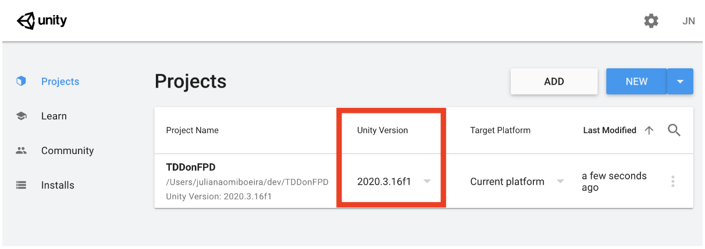
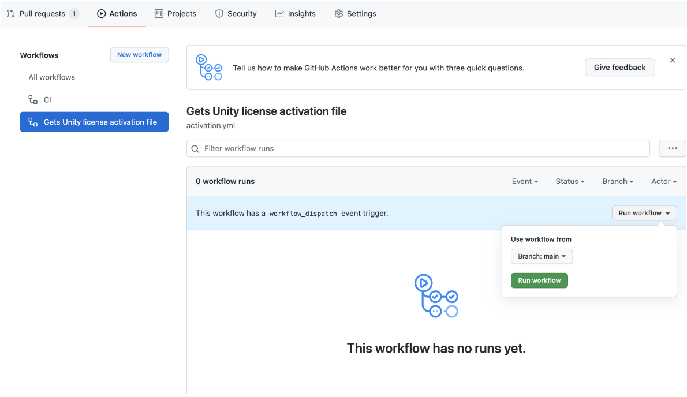
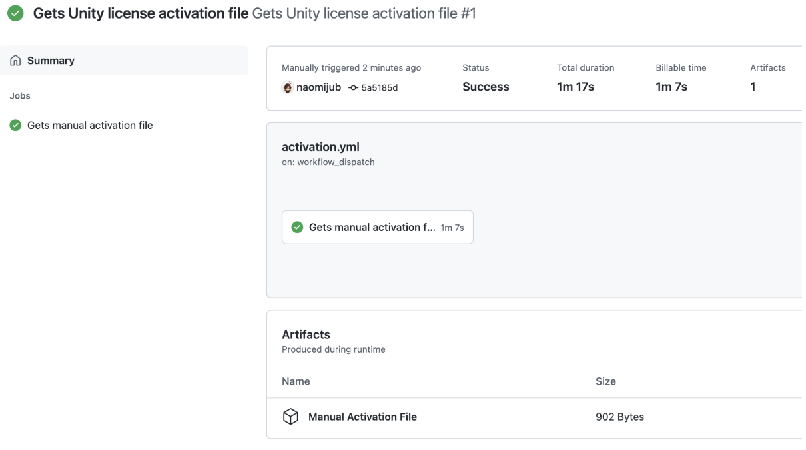
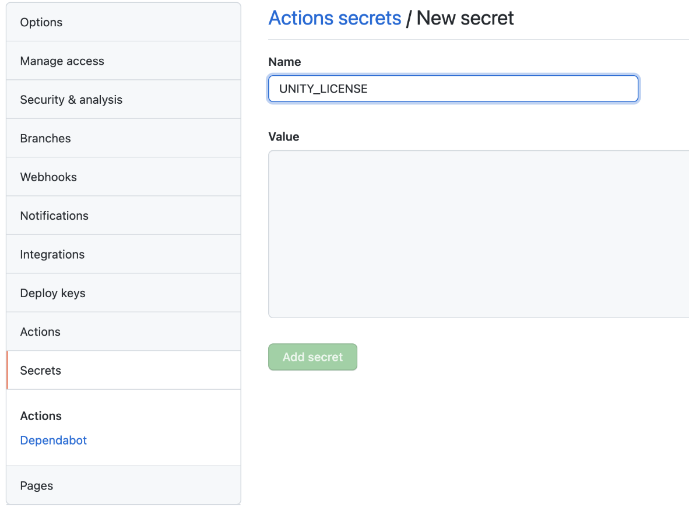

Chapter 7: CI for Games
There are a large number of CI tools that are compatible with games. However, there might be some resistance to adopt them, so here are a few benefits not only related to the development cycle that can help to sell the CI usage:
- Non-developers can check the current state of the game at any time, considering that the CI triggers a continuous delivery process for alfa or beta versions.
- A press/media version can always be available, for example in a complete example scene.
- The publisher can always identify and keep up with the game's current version.
- It is guaranteed that the game works on different platforms that have been tested.
- It is easy to get the latest build version.
- Easier to identify bugs, which is really important to the business side as it can reduce the time to fix them as well as avoid releasing games with bugs.
CI for Unity
As I am of the opinion that every modern software project should have a CI/CD pipeline associated with it, Unity is no exception. There are a few options to configure a CI for Unity, but the most obvious one is Unity Cloud Build as it is Unity's native CI tool, it is very well documented and a complete up to date guide can be found in Learn Unity's website. However, it may not be the perfect tool for your project and it works better as a continuous builder only tool than a CI/CD tool. The other obvious choice is to use some kind of CI like Github Actions, GitlabCI, Travis-CI, Game.CI or CircleCI. Unfortunately, I have had a lot of problems configuring Unity's CI with Travis-CI and I do not recommend it, as even though it did work at some point, it has to be continuously fixed for future changes. So, as most of my projects are on Github I usually choose Github Actions as my CI.
The best way to create an Unity Github Actions is with the newly created Game.CI, which is a rebrand of Unity Actions, combined with Unity Builder for the build step.
Dockerizing Unity
Game-ci/docker are specialised Unity Docker images for CI and command-line tools, which are named unity-ci/editor and can be found at https://hub.docker.com/r/unityci/editor, choose your unity version. The only problem with this, so far, is the limited IL2CPP support (Ubuntu Only) and versions newer than 2019. You can find your Unity version in Unity Hub as the following image shows:
 Image: Project's Unity version in Unity Hub
To execute this docker image you can run docker run -it unityci/editor:ubuntu-2020.3.16f1-mac-mono-0 command, which means we want to run a docker container (unityci/editor), in interactive mode (-it) with the tag ubuntu-2020.3.16f1-mac-mono-0. The Unity editor will be located at /opt/unity/Editor as Unity. Now we need to create the activation file, to do that change your directory o the Editors directory by executing cd /opt/unity/Editor and run the command ./Unity -quit -batchmode -nographics -lgFile -createManualActivationFile, you will see a message saying Manual activation license file saved. The -quit flag tell Unity it need to quit after executing our commands, the -batchmode means it is only going to run on command-line, -nographics means no graphic device is going to be initialized, -logFile outputs the log to the console and -createManualActivationFile will generate a file that allows us to create a license for the docker. You can see the file executing ls and it will be named Unity_v2020.3.16f1.alf. To get the alf file content we can just execute cat Unity_v2020.3.16f1.alf and copy its content (from <?xml…> to ):
<?xml version="1.0" encoding="UTF-8"?><root><SystemInfo><IsoCode>C.UTF</IsoCode><UserName>(unset)</UserName><OperatingSystem>Linux 5.10 Ubuntu 18.04 64bit</OperatingSystem>__<UnityVersion Value="2020.3.16f1" /></License></root>
Save this file in your machine as the alf file and go to Unity's activation page to get our license file https://license.unity3d.com/manual. Download the Unity*.ulf license file, send the file to your docker container by executing docker cp ./Unity_v2020.x.ulf 1c25b08a74dd:/opt/unity/Editor, which means copy a file from file location in host to container_id 1c25… at path /opt/unity/Editor, container id can be found with docker ps, and activate it by executing ./Unity -batchmode -manualLicenseFile Unity_v2020.x.ulf -logfile. Now you can run any game commands with /Unity as long as your container has an associated Dockerfile to build the container with the necessary project files. The game commands that we will run inside the container are equal to the one we will execute, nextly, in github actions.
Configuring Github
There are not a lot of secrets to work with Git and Unity, one important thing is to make sure that you have an up to date .gitignore file and forcing your .meta files to be text mode. To generate and up to date .gitignore, I recommend checking https://www.toptal.com/developers/gitignore/api/unity, just take care when ignoring [Oo]bj and [Bb]uild because some objects and folders use those names and can be ignored. Basic steps are as follows:
- Create a repo on github.
git inityou local Unity folder or git clone from remote and start your unity project there. Ifgit initset your remote to the empty repositorygit remote add origin git@git.path.git.- Add a
.gitignoreand a License file if required. git add .and commit withgit commit -m "<your message>". Then push.- To create a new work branch you can execute
git checkout -b <branch name>. Another important issue in game development is file locking, Which means that only one person can edit a file at a time. This is because git cannot resolve merge conflicts for blob files with its standard tools. Sound effects, 3D objects, sprite sheets, fonts, tiles and binaries in general need locking, also, prefabs and even meta files can cause huge merging conflicts if not locked. The first recommendation would be to have your locked files concentrated in one or a few folders that don't have code or not frequently edited code.
Two important concepts that we can explore for this kind of behavior are partial clones and sparse checkouts. Partial clones allow us to avoid downloading large binary folders so that we can clone them whenever we need them in a just in time manner, discarding the binary objects history. This will help us work only with the latest binaries. A partial clone that removes binaries (blobs) is defined as a clone with a filter tag defining blobs to none, git clone --filter=blobs:none, which will download the blobs metadata but not the file content itself. The sparse flag, --sparse can be used to clone only the files in the root directory and can be used to avoid downloading the blob folders in less complex projects. The whole command can look like git clone --filter=blob:none --sparse git@git.path.git. To retrieve the missing folders without caring about their history you can use the sparse checkout command with the path to the folder/file, git sparse-checkout add /path/to/folder/or/file.
With these techniques we can discuss file locking. File locking works as follows, it is assumed that nobody can write to that file unless explicitly asked and if the file is unlocked. We can do this by using git-lfs file locking feature, which doesn't mean we need to store the files in git-lfs, but we just use its locking feature. To use git-lfs be sure you have lfs installed in your machine and CI and then install it in your project with git lfs install.
To use git-lfs locking feature we need to use a file called .gitattributes, which is a collection of file patterns and attributes, something like **/*.png lockable, that sets the attribute lockable to a PNG files in path **/*. To lock a file for local development you can type git lfs lock /path/to/file, you should receive a message saying Locked /path/to/file. This will lock the file in all branches. To unlock it add the changes, commit them and push, then run git lfs unlock /path/to/file, a message saying Unlocked /path/to/lock.
Configuring Github Actions
We have already generated a license, but now we need to generate a github/workflow that activates this license. First step is to go to your repository in github and click Actions, as Unity doesn't have a preset workflow you will need to click on set up a workflow yourself, which will automatically be called main.yml:
name: CI
on:
push:
branches: [ main ]
pull_request:
branches: [ main ]
workflow_dispatch:
jobs:
build:
runs-on: ubuntu-latest
steps:
- uses: actions/checkout@v2
- name: Run a one-line script
run: echo Hello, world!
- name: Run a multi-line script
run: |
echo Add other actions to build,
echo test, and deploy your project.
Now we can create another yml file named activation.yml, at .github/workflows, that will be responsible for getting Unity's license file:
name: Gets Unity license activation file
on: workflow_dispatch
jobs:
getManualActivationFile:
name: Gets manual activation file
runs-on: ubuntu-latest
steps:
- uses: actions/checkout@v2
- uses: game-ci/unity-request-activation-file@v2
id: getManualLicenseFile
- uses: actions/upload-artifact@v2
with:
name: Manual Activation File
path: ${{ steps.getManualLicenseFile.outputs.filePath }}
The name tag is just the name of the action to be executed and on: workflow_dispatch means that this will only be executed when we order it to dispatch. There will be one job named getManualActivationFile running on an Ubuntu machine. This workflow needs to be manually triggered and it will generate a Manual Activation File, to do this go to Actions > Get Unity license activation file > run workflow. Once it is done, the file will be available to download at the workflow execution under the name Manual Activation File. Download the file and unzip it to retrieve the .alf file and follow the same process as we did with docker to retrieve the .ulf file. Now go to your repository Settings then Secrets, copy the ulf file content and paste it into a new repository secret called UNITY_LICENSE.
 Image: Run activation workflow
 Image: Download Manual Activation File
 Image: Paste ulf file content into secret UNITY_LICENSE
For professional and pro licenses you will be required to have 3 more repository secrets:
- UNITY_SERIAL: the professional License serial key.
- UNITY_EMAIL: your Unity login email.
- UNITY_PASSWORD: your Unity login password.
Build your project on the CI
Now that we have our project CI configured we can start building it. It makes no sense to build our project in the CI without having a base project, so I recommend you to have an empty project with this step. Let's start simple and then expand our build.
The minimal build for the CI is under Jobs add this simple_build:
jobs:
simple_build:
runs-on: ubuntu-latest
steps:
- uses: actions/checkout@v2
- uses: game-ci/unity-builder@v2
env:
UNITY_LICENSE: ${{ secrets.UNITY_LICENSE }}
with:
targetPlatform: WebGL
This build will basically use your UNITY_LICENSE secret, which is accessed using ${{ variable }} syntax, to build your project targeting the WebGL platform. It maybe be useful to store the built artifact, for that you can add a new step after the unity-builder@v2 with the following configuration:
- uses: actions/upload-artifact@v2
with:
name: <Your build name>
path: build
But this build takes a while to execute and there is a simple way to solve this, which is caching the Library folder. If you check the build description, you will see it took a while to execute all the commands associated with the Library folder, so to cache it we can add:
- uses: actions/checkout@v2
- uses: actions/cache@v2
with:
path: Library
key: Library-${{ matrix.targetPlatform }}
restore-keys: Library-
- uses: game-ci/unity-builder@v2
Note that the cache step is before the unity-builder@v2 step and I have added a matrix.targetPlatform variable, which we will shortly use. If you have only one target platform, please use only its name.
To include multiple platforms, we will be required to define a strategy before defining the steps. We can do that by defining the strategy tag that contains a matrix tag with all platforms. Also, we can generate a different build for every platform by naming our build name: Build - ${{ matrix.targetPlatform }}.
build:
name: Build - ${{ matrix.targetPlatform }}
runs-on: ubuntu-latest
strategy:
fail-fast: false
matrix:
targetPlatform:
- StandaloneOSX
- StandaloneWindows
- StandaloneWindows64
- StandaloneLinux64
- iOS
- Android
- WebGL
steps: ...
There are many other build configurations that can be found in the GameCI/github/builder page, but for now we are going to start testing our game.
Testing your project on the CI
Just like unity-builder on CI, unity-test-runner expects some tests to exist, and to do that you should create some Unity tests, which are explained in the next chapter. Test runner is not that easy to start small and expand, because there are many nice configurations we can do to make sure we have a minimal adequate test setup. So, our test job looks like the following:
jobs:
testAllModes:
name: Test in ${{ matrix.testMode }}
runs-on: ubuntu-latest
strategy:
fail-fast: false
matrix:
testMode:
- playmode
- editmode
steps:
- uses: actions/checkout@v2
with:
lfs: true
- uses: actions/cache@v2
with:
path: Library
key: Library-${{ matrix.testMode }}
restore-keys: |
Library-
- uses: game-ci/unity-test-runner@v2
id: tests
env:
UNITY_LICENSE: ${{ secrets.UNITY_LICENSE }}
with:
testMode: ${{ matrix.testMode }}
artifactsPath: ${{ matrix.testMode }}-artifacts
githubToken: ${{ secrets.GITHUB_TOKEN }}
checkName: ${{ matrix.testMode }} Test Results
- uses: actions/upload-artifact@v2
if: always()
with:
name: Test results for ${{ matrix.testMode }}
path: ${{ steps.tests.outputs.artifactsPath }}
build: ...
Our job will be defined as testAllModes with a name tag that varies depending on the matrix.testMode. Unity-test-runner has three possible modes: playmode, which will only execute playmode test, editmode, which will only execute editmode tests, and all, which will execute playmode and editmode tests. As a quick reference, editmode tests are unit level tests that don't execute Start, Awake and Update functions from Unity's MonoBehaviour, while playmode tests execute those functions allowing you some control over how many update frames you want. The testModes are defined in strategy > matrix > testMode. We have already talked about caching, but we don't actually need the testMode variable for this test. Then we execute the unity-test-runner@v2 with UNITY_LICENSE, the with tag defines parameters to be used, in which testMode is one of the possible test modes, artifactsPath is where we want to upload our test artifacts, checkName is the name in which we want this artifacts to be and githubToken, which is automatically generated, allows us to the github status check results for our test. Lastly, we upload the artifacts with actions/upload-artifact@v2 step, defining that it will always be uploaded, if: always(), under the name Test results for $testMode in the path defined in artifactsPath.
Improving execution time
One thing that is annoying with this CI configuration is that some git large files take too long to execute. Fortunately there is a solution for this, which is to cache the Git Large File by adding this script after the checkout action, actions/checkout@v2:
- name: Create LFS file list
run: git lfs ls-files -l | cut -d' ' -f1 | sort > .lfs-assets-id
- name: Restore LFS cache
uses: actions/cache@v2
id: lfs-cache
with:
path: .git/lfs
key: ${{ runner.os }}-lfs-${{ hashFiles('.lfs-assets-id') }}
- name: Git LFS Pull
run: |
git lfs pull
git add .
git reset --hard
And the complete script is:
name: CI
on:
push:
branches: [ main ]
pull_request:
branches: [ main ]
workflow_dispatch:
jobs:
testAllModes:
name: Test in ${{ matrix.testMode }}
runs-on: ubuntu-latest
strategy:
fail-fast: false
matrix:
testMode:
- playmode
- editmode
steps:
- name: Checkout code
uses: actions/checkout@v2
with:
lfs: true
- name: Create LFS file list
run: git lfs ls-files -l | cut -d' ' -f1 | sort > .lfs-assets-id
- name: Restore LFS cache
uses: actions/cache@v2
id: lfs-cache
with:
path: .git/lfs
key: ${{ runner.os }}-lfs-${{ hashFiles('.lfs-assets-id') }}
- name: Git LFS Pull
run: |
git lfs pull
git add .
git reset --hard
- name: Cache Library
uses: actions/cache@v2
with:
path: Library
key: Library-Test
restore-keys: |
Library-
- name: Run test ${{ matrix.testMode }}
uses: game-ci/unity-test-runner@v2
id: tests
env:
UNITY_LICENSE: ${{ secrets.UNITY_LICENSE }}
with:
testMode: ${{ matrix.testMode }}
artifactsPath: ${{ matrix.testMode }}-artifacts
githubToken: ${{ secrets.GITHUB_TOKEN }}
checkName: ${{ matrix.testMode }} Test Results
- name: Upload artifact for test in ${{ matrix.testMode }}
uses: actions/upload-artifact@v2
if: always()
with:
name: Test results for ${{ matrix.testMode }}
path: ${{ steps.tests.outputs.artifactsPath }}
build:
name: Build - ${{ matrix.targetPlatform }}
runs-on: ubuntu-latest
strategy:
fail-fast: false
matrix:
targetPlatform:
- StandaloneOSX
- WebGL
steps:
- name: Checkout code
uses: actions/checkout@v2
- name: Create LFS file list
run: git lfs ls-files -l | cut -d' ' -f1 | sort > .lfs-assets-id
- name: Restore LFS cache
uses: actions/cache@v2
id: lfs-cache
with:
path: .git/lfs
key: ${{ runner.os }}-lfs-${{ hashFiles('.lfs-assets-id') }}
- name: Git LFS Pull
run: |
git lfs pull
git add .
git reset --hard
- name: Cache Library
uses: actions/cache@v2
with:
path: Library
key: Library-${{ matrix.targetPlatform }}
restore-keys: Library-
- name: Build for ${{ matrix.targetPlatform }}
uses: game-ci/unity-builder@v2
env:
UNITY_LICENSE: ${{ secrets.UNITY_LICENSE }}
with:
targetPlatform: ${{ matrix.targetPlatform }}
Note that I have added names for each step.
Deploying artifacts
Deploying artifacts with a CI is not a big mystery, and it is less of a mystery when we can combine Unity, Wasm, WebGL, Github Actions and Github Pages. In this example we will deploy an artifact to github pages, but the mechanics of doing so is similar in any platform:
-
- Generate a build to the target platform in your CI.
-
- Store that build somewhere.
-
- Have the platform deployment credentials stored in your CI.
-
- Run a script that can deploy the build with the correct credentials in the target platform.
For the github actions to deploy to github pages we need to build Unity targeting WebGL, which we already do in our build > strategy > matrix > targetPlatform > WebGL script. However, we still need to store the built artifact somewhere, which we can do by adding the following to the build script:
- name: Build for ${{ matrix.targetPlatform }}
…
- uses: actions/upload-artifact@v2
with:
name: build-${{ matrix.targetPlatform }}
path: build/${{ matrix.targetPlatform }}
Basically this means that after we build the artifact for matrix.targetPlatform we will use the action actions/upload-artifact@v2 to upload the artifact with name build-${{ matrix.targetPlatform }} in the path build/${{ matrix.targetPlatform }}. Now we need to configure github pages.
Configuring Github Pages
The first thing I do to use github pages is to create a github pages branch, which I usually call gh-pages. Having that branch created we can enable github pages in our repository by going to Settings > Pages. For our purposes now, the only important fields are sources and the checkbox Enforce HTTPS.
Enforce HTTPS is as it says, it enforces that your page is using HTTPS, while sources is where the configuration actually happens. You can see that your sources have a branch dropdown, choose the branch that you built items will be available, in our case gh-pages, than choose the folder that your build will be, usually there are only two options /root and /docs, I usually deploy to root. Hit the save button. Custom domain is in case you have a hosted domain that you want the code to be deployed to and theme is the theme style that you want your github pages to have.
For Github Pages WebGL projects on Unity make sure to set publishing compression format to disabled. To do this go to File > Build Settings > Player Settings > (Select WebGL icon) > Publishing Settings > Compression Format.
The deploy script
The deploy script cannot be executed before (or in parallel with) the build script, as it requires an uploaded build to generate its deployment. To make sure or this order we tag the deploy script with needs: build, then we give it a name and set it to run in linux:
deployPages:
needs: build
name: Deploy to Github Pages 🚀
runs-on: ubuntu-latest
steps: …
Now the necessary steps are to download the artifact from the storage and run an action to deploy it in github pages, we can do that with the following actions:
deployPages:
…
steps:
- name: Checkout code
uses: actions/checkout@v2
- uses: actions/download-artifact@v2
with:
name: build-WebGL
path: build
- name: Deploy 🚀
uses: JamesIves/github-pages-deploy-action@4.1.4
with:
branch: gh-pages
folder: build/WebGL
Now, check the github pages and play. The link to your github pages can be found in your repository at Settings > Pages.
One important notice is that to deploy to Android and iOS some packaging conventions may be required, for Android the package must be named com.YourCompanyName.YourProductName. More information on deploying to platforms may be found at game ci.